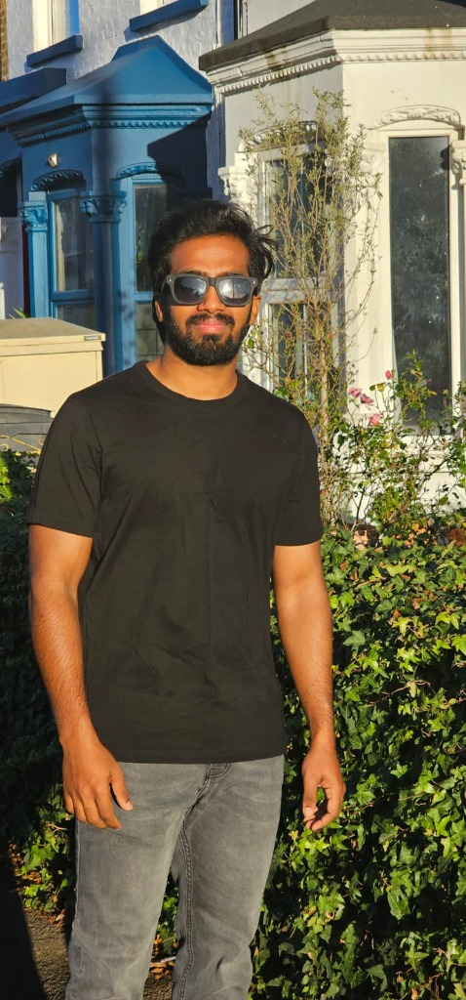
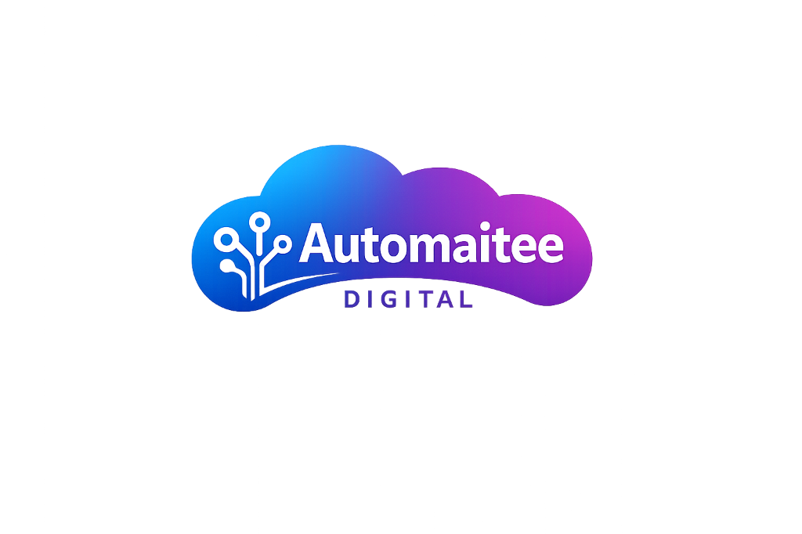

Master's - Marketing Analytics (2025 - 2026)
Birkbeck, University Of London - London, UK.

Hi, I’m Kesav S., a passionate digital automation entrepreneur and innovator. I help businesses and individuals unlock efficiency by creating personalized Integrated Automation solutions that simplify everyday tasks and drive growth. With a background in marketing analytics from Birkbeck, University of London, I combine data-driven insights with cutting-edge technology to deliver results that matter. My mission is to empower people and businesses to focus on what truly counts while automation handles the rest.
Automaitee Digital – Automations Personalized
https://www.automaitee.com/
Birkbeck, University Of London - London, UK.
ANJAC, Madurai Kamaraj University - Tamilnadu, India.
Tata Consultancy Services (Tapestry Inc.) | Mar 2023 - Oct 2024
Manipal Academy of Higher Education | Feb 2021 - Oct 2022
Rajapalayam | May 2020 - Oct 2020